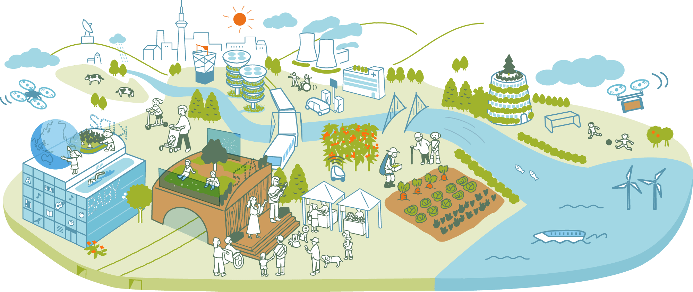
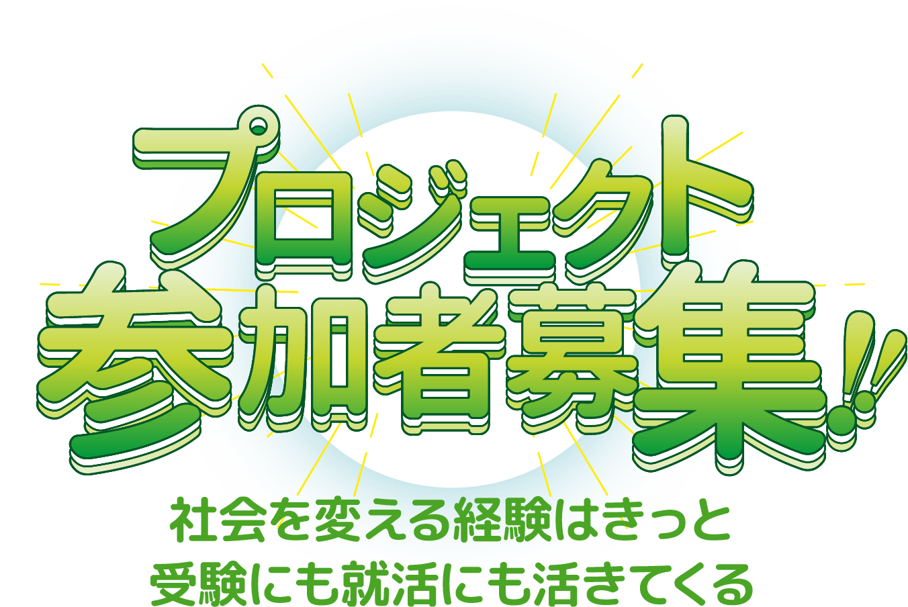
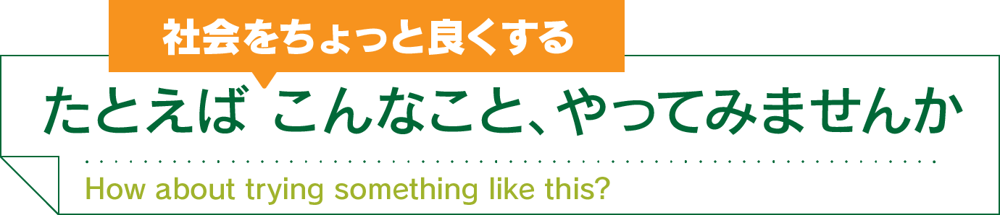
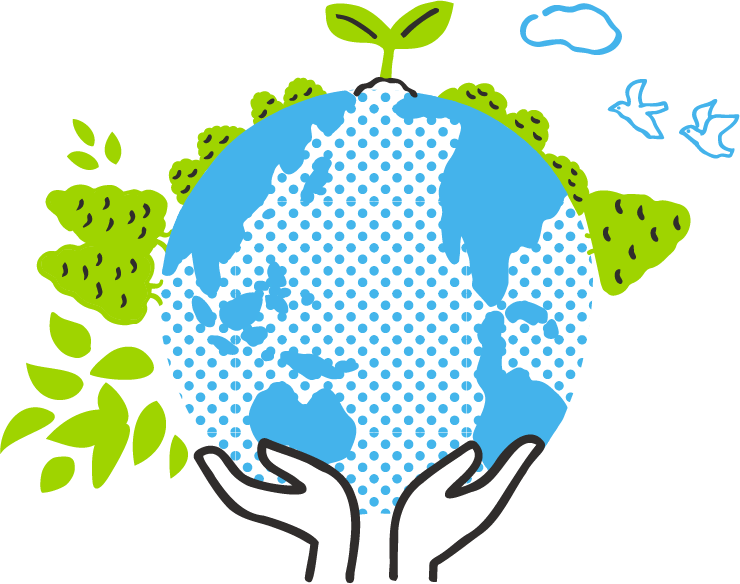
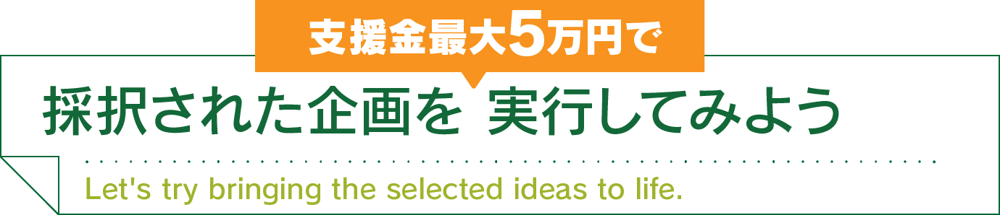
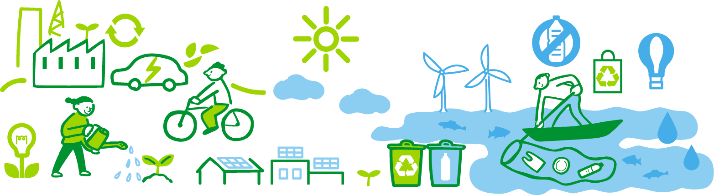
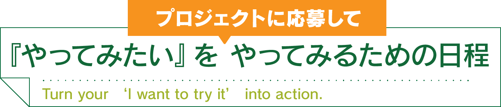
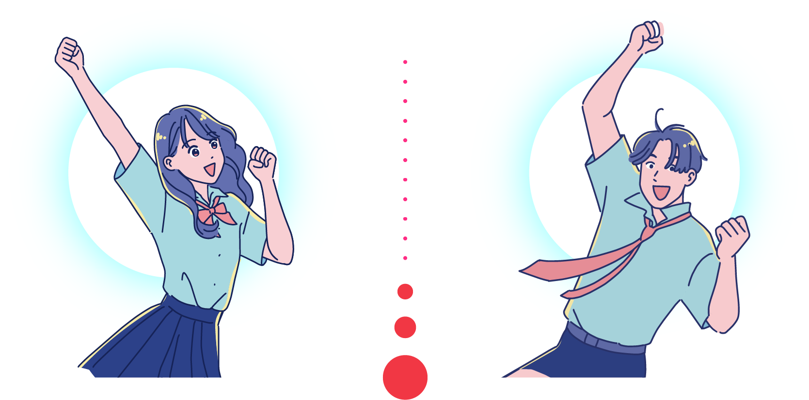
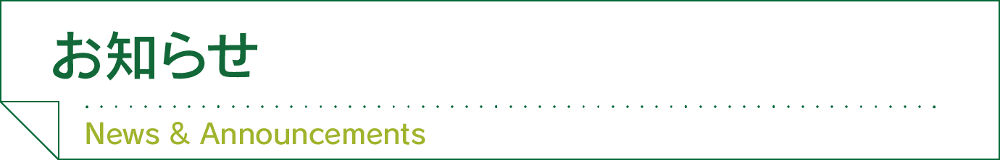
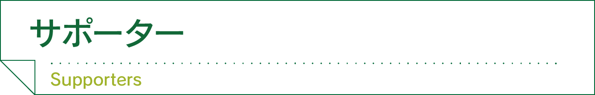

その『やってみたい』をやってみる



- 地域課題の改善に向けた試み
- 学校生活の課題解決
- 地域との交流づくり
- 環境・福祉・文化に関する取り組み
- 試作や実証を伴う実験的企画 等
※規模の大小は問いません。
※安全面・実現可能性を十分考慮した内容とします。


- 採択された企画ごとに上限5万円を実費で支援します
- プロジェクトは複数採択の場合も見送りの場合もあります
- 結果報告までがこのプロジェクトです。成果は問いません。
実行することに意義がありその全ては「実り」になります。


| 募集開始 | 2026年 6月1日（日） |
|---|---|
| 応募締切 | 2026年 8月21日（金） |
|
企画プレゼンテーション 参加チーム発表 |
2026年 8月25日（火） |
| 企画プレゼンテーション |
2026年 8月25日（火） サンビームやない（柳井市）にて開催予定 |
|
学校 × 企業 連携セッション （※1） |
2026年 8月25日（火） （企画プレゼンテーション終了後） |
| 採択発表 | 2026年 9月7日（月） |
| 成果発表会 （※2） |
2027年 1月23日（土） サンビームやない（柳井市）にて開催予定 |
※1
このセッションは、教職員を対象に実施します。今回の応募企画に限らず、各学校における探究活動全体や地域連携の可能性について共有し、企業が提供可能な支援や関わり方について意見交換を行うことで、今後の継続的な連携につながる接点を創出する場とします。
※2
学校関係者に加え、地域で事業や活動を担う経営者・実務者にも参画いただき、教育的観点および社会的観点から講評・助言を行います。



「社会をちょっと良くする」プロジェクトは地元企業・団体および、教育機関、自治体のご賛同と支援を受けて企画・運営されています。